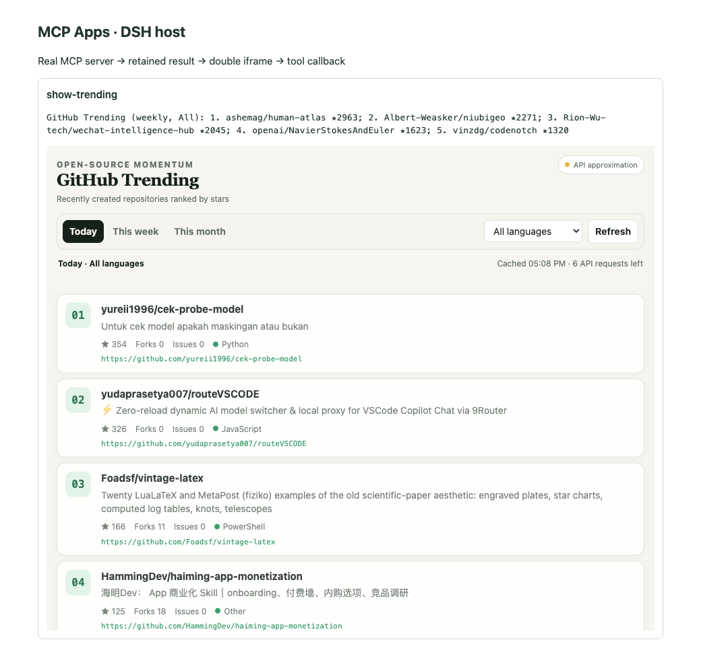

APP PROCESS
用户在卡片中直接调用 App 可见工具
点击 Today 后，App 发起 refresh-trending，模型不参与这次交互
08
APP EVENTS
Today
APP
callServerTool({
name: "refresh-trending",
arguments: { period: "day" }
})

Created by Huashu-Design